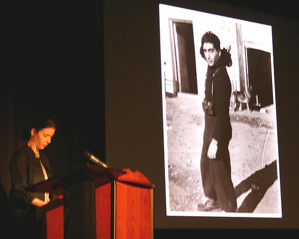
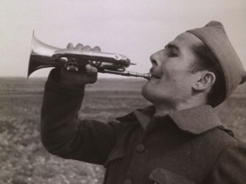

Dan begins the session by announcing with regret that Steven Higgins will not be present due to a family emergency and notes that both Cineric and Museum of Modern Art donated the work to make the new print of The People’s Congressman. He welcomes Charles Musser, “author of 571 books”, to the podium. A slightly blushing Musser graciously laughs off the compliment and commences with his talk: “The People’s Congressman (1948) and Union Films: Progressive Left Filmmaking after WWII.”
Musser dedicates this screening of The People’s Congressman, a film that Paul Robeson narrated and in which he appeared, to his late friend and mentor Jay Leyda, who always insisted that the campaign film was an ignored genre. In trying to determine who made the film, Musser encountered in the film’s case a piece of paper that read “Jay Leyda knows who made this film.” The audience chuckled as Musser noted the irony of this find, lamenting that he should have started this project a few decades ago in order to take advantage of his late colleague’s expertise.
He suggests that many think left wing filmmaking ended with the passing of Frontier Films in the early 1940s, but the work of Union Films after WWII shows that the committed aesthetic did not disappear quietly on the eve of the war.
Union Films contracted with United Electrical and other unions to produce documentaries and campaign films between 1946 and 1949. Members of the film company included Carl Marzani, Max Lambarg, Andy Cusick, Victor H. Kumow (cameraman), Edith Eisner Marzani (business manager and distribution agent), Max Glanbard (an ex-community theater director), and Richard Lyford.
Marzani, who founded the film company, produced the academy award nominated War Department Report in 1943 while employed in the government’s wartime Office of Strategic Services and worked subsequently in the Department of State’s Presentation Division. During his period in federal employ, he failed to divulge a previous brief stint as a CPUSA organizer. In 1947, Marzani was controversially indicted on fraud charges and served time in prison. Union Films’ first production, Deadline for Action (1946) (Watch video here), available as part of the Prelinger collection on archive.org, was released a few months prior to his conviction and caused him a great deal of trouble.

Charles Musser, in spirited debate with Richard Allen
The People’s Congressman was produced for the campaign of Vito Marcantonio, a former republican, who was running for re-election in New York’s 18th Congressional District on the American Labor Party ticket. The film, which Musser suggests evokes The River and takes a few jabs at The City, offers an alternative vision of the future for America’s citizens that involves improving their urban plight, rather than fleeing to the suburbs.
The Film: Pan over streets of the Upper East Side. These people need someone who will fight with them. Marc was born in this district, was born on this street “right in this very house”. The neighbors know him well. They know that he is incorruptible. Marc looks out over the East River, remembering all he has accomplished in this district. He talks one by one with a crowd of forlorn faces, listening to their concerns from behind thick black-rimmed glasses. Slow pan of the heavily burdened citizens crowding his office: “these are their faces.” Marc is hated by big business. Labor must have its own party. A progressive party. In front of a crowd of 50,000 at Yankee Stadium, Vito with fist in air stands “shoulder to shoulder” with men like Paul Robeson and Henry Wallace. Re-elect Vito Marcantoni. American Labor Party. The end.

Cynthia Young speaks as Capa looks on approvingly
Cynthia Young from the International Center of Photography (ICP) takes the podium to speak about the Center’s efforts to catalogue and conserve a rare photo collection that was discovered in Mexico in 1995. “The Mexican Suitcase,” as it was known, contained over 3,500 negative images of the Spanish Civil War shot by Robert Capa, Gerda Taro and David Seymour (also known as Chim). It was discovered by the great nephew of General Aguilar Gonzales in Mexico and recent negotiations on the part of the photographer's heirs brought its contents back to the United States.
Young notes that the “suitcase” was actually not a suitcase at all but three boxes: one Ilford photo box and two commercial boxes of film. She screens selections from two rolls of film. The first shows troops along the Rio Segura. Although many shots from this roll and others have been published and are well known, Young suggests that the discovery of the film negatives from which these images originated allows a new perspective. We can see sequences of images that contextualize previously published images for example, and we now have knowledge of what was edited out of those well known pieces. Furthermore, by making the images public, the memory of the events by bystanders and people in the photos may be triggered. While screening the second role of film, Young notes for example that coverage of the suitcase find in a local Mexican newspaper caused one man to come forward and identify himself as a child climbing on top of a car in one of the photographs.
She closes by announcing that the ICP is working with Eastman House on a custom scanner to help with the digitization of the negatives. They are currently scanning the film and estimate that the process will take about a year. They intend to publish all of the material online when complete.

Roman Gubern and Cynthia Young
Continuing with the theme of the Spanish Civil War, Romån Gubern from Filmoteca Española takes the mic to explain the work of Laya Films. In the propaganda battle that was being waged in Spain in 1936, many films were made to garner support, financial and otherwise, for the Republican regime. With a name referencing the pre-Roman Catalonian territory of Layetana, Laya Films set up a production and distribution department in Spain during the war that produced newsreels and documentary films and circulated Soviet and other films. An estimated 107 films were produced by the film company, including at least 20 documentaries. They had arrangements with several major distributors in the United States and abroad including Paramount and Pathe. At the end of the war, their significant archive of footage was confiscated by Franco’s authorities, disassembled and transferred to a police archive. This file was used to identify suspected criminals and insurrectionists. By 1945 the material was largely destroyed by a fire in the building where it was housed in Madrid.
Gubern screens two reels of surviving outtakes covering the Liberacion de Malaga and related maneuverings. These silent reels were scored for this event by NYU film scoring students, and contain the iconic image of a bugler that graces the Orphans 6 program.

Although the narrative that these images suggest is obscured by their status as outtakes, a strong sense of sympathy for the people of the devastated town, and a clear need for food and reinforcements for hard working Republican troops is evident.
If we were left happily wanting more after Gubern’s presentation of footage, we were happy to see Paula Felix-Didier take the stand to introduce the screening of an edited version of this footage entitled Noticario de Laya No. 3 (1937). Paula credits Mona Jimenez with her concern about this then unidentified piece of nitrate film that led to her own eventual discovery of its origin. Alfonso del Amo Garcia’s General Catalogue of the Films of the Spanish Civil War provided the important bit of information that an extant print of Noticario de Laya No. 3 was not known to exist. However, previous inspection work by students in NYU’s Moving Image Archiving and Preservation program had identified the film as one of Laya’s newsreels and noted that it was in fairly stable condition but needed preservation. The film came to reside at Bobst along with three reels of footage of the Abraham Lincoln Brigade via the efforts of archivist Victor Berch. Sarah Ziebell and Dan Streible’s efforts also helped get the reel preserved and now one copy has been deposited here at the Tamiment Library and one at the Filmoteca Española in Madrid.
As the projector rolls, the outtakes we have just seen assume a more organized form. Militia men coming from the Aragon Front arrive in Barcelona. Scenes from the town of Malaga, which fell to the Fascists in February of 1937, showcase the devastation to homes and buildings. Sounds of bullets hailing on the southern Front. American ambulances arrive in Barcelona on their way to the Madrid Front. Lines of refugees leave Madrid. A happy newlywed militiaman descends the steps of a church with his new bride. Cut to Oviedo and more sounds of gunfire. Catalonian people greet their Basque brothers. The revolution creates new free schools for a new generation. The reel ends with a meaningful series of shots of children in school, the most memorable of these a medium long shot of a group of young kids looking out at the camera raising their fists—“la liberta”.
A former journalist and, as Dan introduced him, 'an expert on Spanish cinema history,' Steven Marsh ventured a thoughtful and well prepared response to this enlightening panel. He called attention to the relevance of the discovery of the Laya newsreel and others of its kind to the ongoing debates in Spain about the relation of the archive to cultural memory. Suggesting that these films are part of the nuancing of traditional approaches to the Spanish Civil War, he focused on the way our study of them can interrogate and ask questions of the accepted history. Marsh linked the Laya newsreel to the recent controversial law that Socialist Prime Minister Jose Luis Rodriguez Zapatero has made the centerpiece of his campaign. The “law of historical memory” increases funding for efforts to recover and identify bodies from mass graves across the country and pushes local governments to make their wartime archives more accessible to researchers. Marsh notes that the significance of this law, and its interesting linking of bodies and archives, may have a complicated meaning for the current generation in Spain that is too young to have participated in the transition from dictatorship to democracy. In modern day Spain, just as before, this archive of films, documents and bodies takes on the quality of performative memorialization.
The unruly nature of propaganda is quite evident, argued Marsh, in the history of this footage: it’s re-purposing by pro-Franco forces into an archive of suspected criminals being the prime example of this bricolage aesthetic of re-use. If the image of raised fists of little children can serve the Generalitat’s goal of self determination for, and world recognition of, a fledgling state as well as the aspirations of pro-Franco forces to quash that state, it needn’t stop there. The re-opening of the archive of historical memory by Zapatero has created a 3rd generation audience for these raised-fist images and the history of their circulation and re-purposing. It is this new generation that will be responsible for approaching and producing Spain’s national cultural memory. But, Marsh argues, this new generation, by their lack of immediate memory, must participate in a politics of the self that requires them to see their ‘self’ as an ‘other’. Marsh notes that this kind of spectatorship takes on the form of a heterology, divorced from the melancholia of earlier generations that lived through the war. In this environment, the political subject exists in the interval between two ideologies.